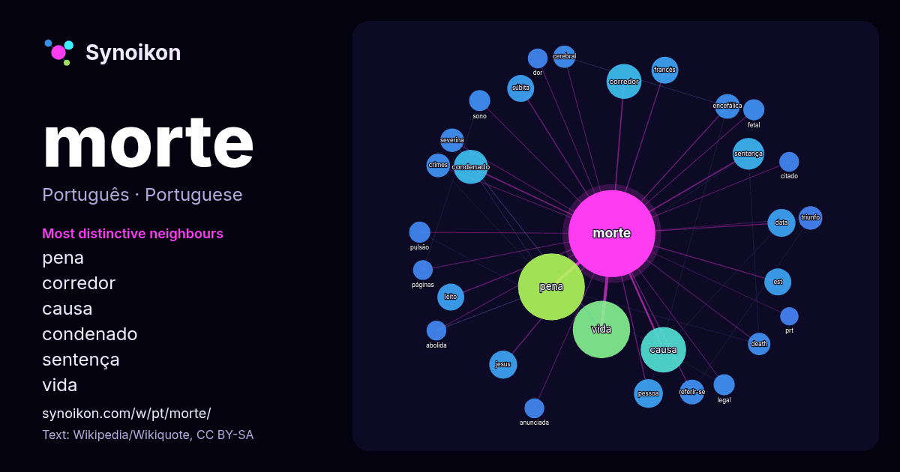

Português · palavra popular
morte
“death” · As palavras encontradas ao seu redor em 1390 ocorrências da Wikipédia, Wikiquote.

Vizinhos mais característicos
- pena 66×
- corredor 21×
- causa 19×
- condenado 18×
- sentença 17×
- vida 15×
- súbita 14×
- est 14×
- leito 13×
- encefálica 12×
- referir-se 11×
- severina 11×
- triunfo 10×
- jesus 9.6×
- cerebral 9.2×
- death 9.2×
- pulsão 9.0×
- fetal 8.9×
- pessoa 8.8×
- sono 8.6×
× = quantas vezes mais do que no texto geral da Wikipédia.
Vizinhos mais frequentes
- pena 80
- vida 59
- causa 37
- corredor 22
- condenado 21
- brasil 18
- sentença 18
- deus 17
- sido 17
- pai 16
- pessoa 15
- portugal 15
- data 14
- jesus 14
- termo 14
- est 13
- francês 13
- guerra 13
- leito 13
- súbita 13
Em contexto
- Nota: Para outros significados, veja Morte (desambiguação). Morte (do termo latino mors), óbito (do termo latino obitu), falecimento (falecer+mento), Wikipedia snippets · Morte
- alguém à morte é denominada sentença de morte, enquanto o processo que leva à morte é denominado execução. Crimes que podem resultar na pena de morte são chamados Wikipedia snippets · Pena de morte
- morte, e o tribunal afirmou a legalidade da pena de morte no caso de 1976 Gregg v. Georgia. Desde então, mais de 7.800 réus foram condenados à morte; Wikipedia snippets · Pena de morte nos Estados Unidos
- Independência ou Morte é uma pintura do artista brasileiro Pedro Américo. É considerada a representação mais consagrada e difundida do momento da independência Wikipedia snippets · Independência ou Morte (Pedro Américo)
- melhores exemplos de novela", A morte de Ivan Ilitch conta a história de um juiz de alta corte e seus sofrimentos e morte por uma doença terminal na Rússia Wikipedia snippets · A Morte de Ivan Ilitch
- pena de morte. Para a punição de agredir alguém fisicamente entre duas fileiras humanas, veja Corredor polonês (punição). Corredor da morte é um termo Wikipedia snippets · Corredor da morte
- A morte de Osama bin Laden, um dos membros sauditas da família bin Laden e líder-fundador do grupo terrorista al-Qaeda, ocorreu durante a Operação Lança Wikipedia snippets · Morte de Osama bin Laden
- Esta é uma relação de pessoas notáveis que morreram durante o ano de 2026. Wikipédia:Wikidata/Mortes recentes Wikipedia snippets · Mortes em 2026
Mais palavras
- arte
- ciência
- clima
- comida
- coração
- cão
- deus
- dinheiro
- família
- força
- gato
- história
- língua
- natureza
- ouro
- ponte
- saúde
- trabalho
- trem
- verdade
- vida
- água
Pré-calculado em 2026-10-09 com as configurações padrão (±5 palavras, corpus médio). O mapa interativo pode atualizá-lo com dados ao vivo.
Interface traduzida automaticamente; correções são bem-vindas.